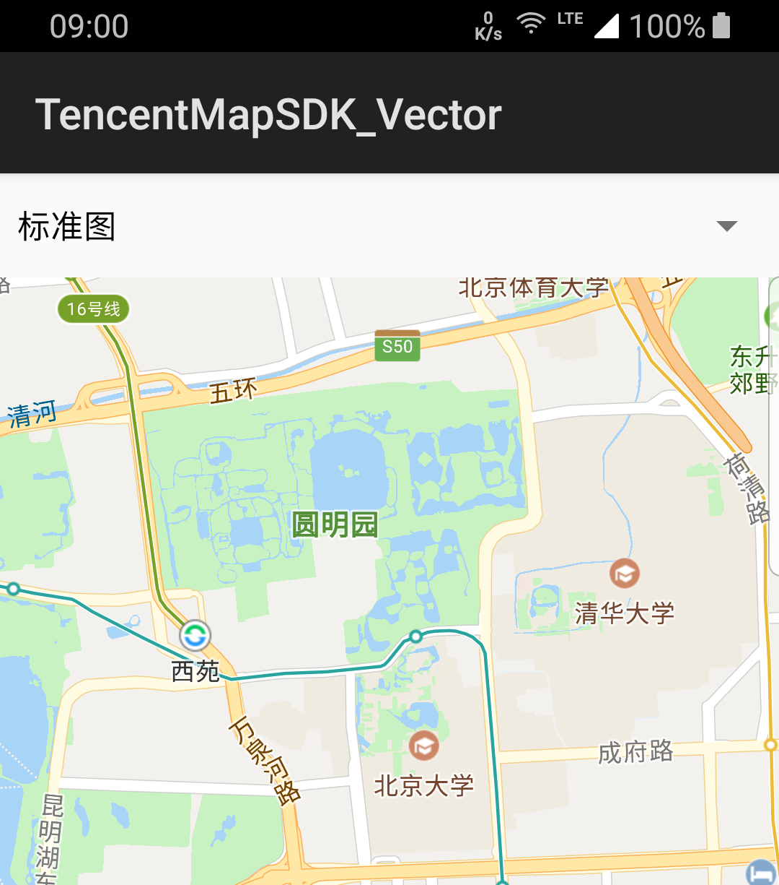
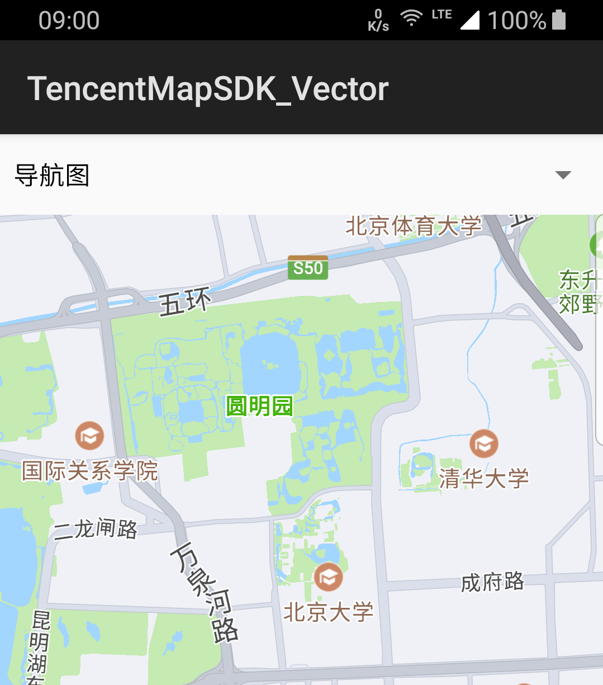
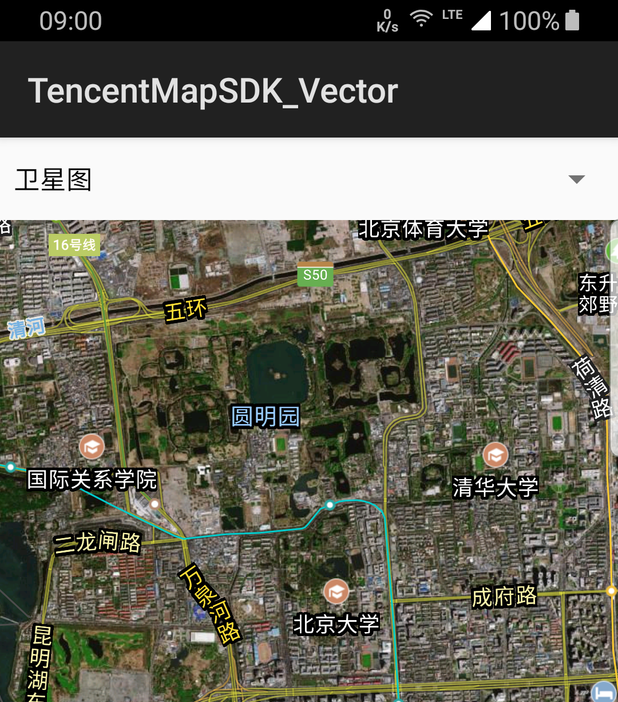
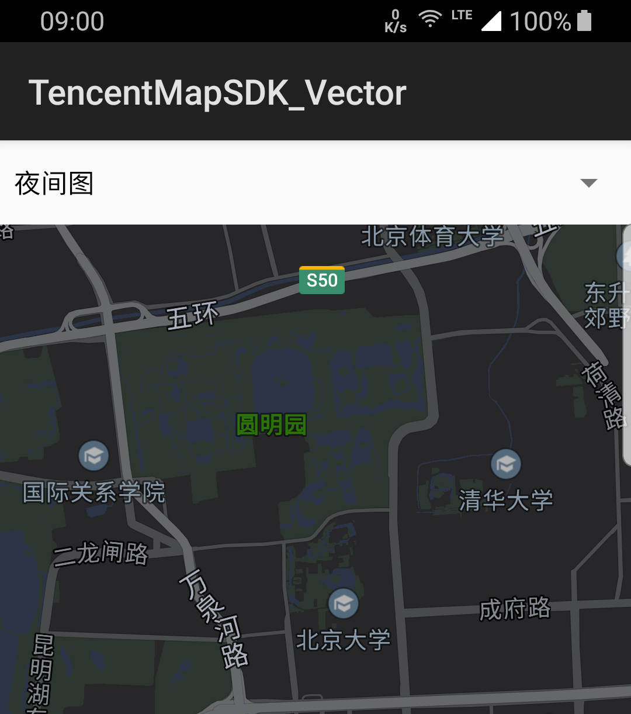
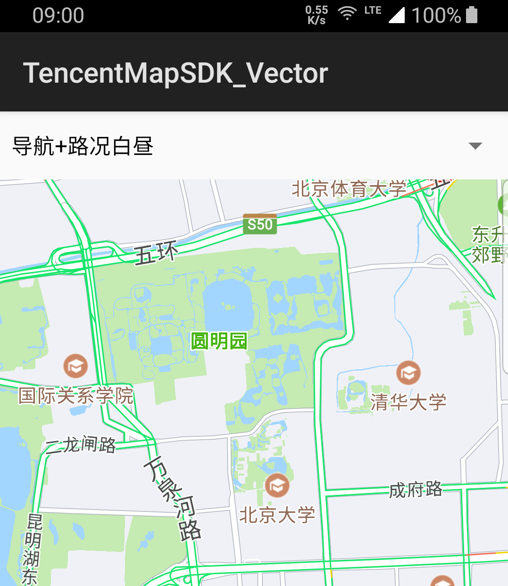
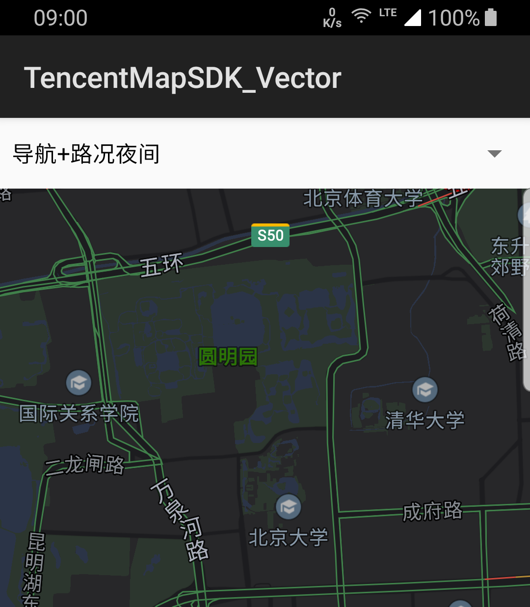

切换地图类型
介绍
切换地图类型，提供对地图类型的认识和设置方法。
认识地图类型
腾讯的地图类型，定义了地图最底部图层的内容，包括背景面、背景色、道路、标注、文字等，默认提供的地图底图，支持四种类型
1.MAP_TYPE_NORMAL 标准图

2.MAP_TYPE_NAVI 导航图

3.MAP_TYPE_SATELLITE 卫星图

4.MAP_TYPE_NIGHT 夜间图

以及一些组合地图类型
1.MAP_TYPE_TRAFFIC_NAVI 导航+路况白昼图

2.MAP_TYPE_TRAFFIC_NIGHT 导航+路况夜间图

设置地图类型
默认四种类型可以通过TencentMap.MAP_TYPE_XXXX直接设置，组合地图类型需要配合路况服务开关设置，地图类型支持动态设置。
//设置地图类型
mTencentMap.setMapType(TencentMap.MAP_TYPE_XXXX);
//开启路况服务
mTencentMap.setTrafficEnabled(true);
注意事项
- 卫星图TencentMap.MAP_TYPE_SATELLITE 从4.1.2弃用，建议使用TencentMap.setSatelliteEnabled(true)。
- 路况图TencentMap.MAP_MODE_NORMAL_TRAFFIC 从4.1.2弃用，建议使用TencentMap.setTrafficEnabled(true)。